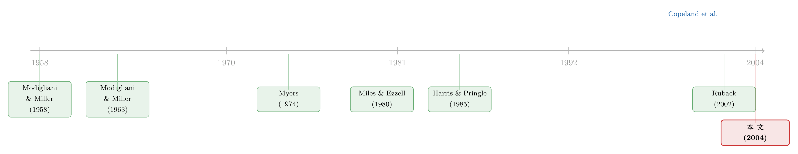

税盾的价值，并不等于税盾的现值
本文读的是 Fernandez (2004, Journal of Financial Economics)：长期以来，几乎所有教科书都把「债务税盾的价值（value of tax shields, VTS）」当成「税盾这串现金流的现值」来算——只是大家为该用什么折现率吵个不停。Fernandez 的主张近乎挑衅：这个问题本身就问错了。税盾的价值，是两套现金流现值之差（无杠杆公司缴的税的现值，减去有杠杆公司缴的税的现值），而不是任何单一现金流的现值。对永续增长公司、且不存在杠杆成本时，他给出的答案是 VTS = D·T·Ku/(Ku − g)。
1 一个吵了四十年都没吵明白的问题
先说一个让人有点尴尬的事实。
公司借钱，利息可以税前抵扣，于是有了「税盾」——这是公司金融里最基础、最人人皆知的概念之一。可是，这块税盾到底值多少钱，金融学界吵了四十多年，至今没有共识。
不信？翻开 Copeland、Koller 和 Murrin 那本被无数 MBA 和投行新人奉为圭臬的 Valuation，第 482 页白纸黑字写着：「the finance literature does not provide a clear answer about which discount rate for the tax benefit of interest is theoretically correct.」（金融文献并没有就「利息的税收收益该用什么折现率」给出一个理论上正确的答案。）他们甚至干脆把球踢给读者：「We leave it to the reader's judgment to decide which approach best fits his or her situation.」
这就奇怪了。一个写进每本教材第一章的概念，怎么会连「值多少钱」都算不清？
我们来看看分歧有多大。最经典的两个对立阵营：
- Modigliani 和 Miller（1963）说，对一个永续、且破产概率为零的公司，税盾的价值就是把每年的利息税盾
D·R_F·T按无风险利率R_F折现，结果是DT。 - Myers（1974）提出的调整现值法（adjusted present value, APV）说，税盾的风险等同于债务的风险，所以应该把
D·K_d·T按债务成本K_d折现，VTS = PV[K_d; D·K_d·T]。 - Harris 和 Pringle（1985）又说，税盾的系统性风险其实和公司资产的现金流一样，所以应该按无杠杆股权成本
K_u折现，VTS = PV[K_u; D·K_d·T]。
同一个税盾，三个折现率，三个答案。每一派都有自己一套关于「税盾风险有多大」的说辞，听上去还都挺有道理。
接着，一个自然的问题是：到底谁对？
Fernandez 这篇文章的回答，不是「我支持其中某一派」，而是「你们这个问题的提法，从根上就错了。」
2 真正关键的一步：税盾不是一串现金流，而是两串之差
这是全文的灵魂，值得我们慢慢咀嚼。
所有上述方法的共同前提是：税盾的价值 = 「税盾」这串现金流的现值。区别只在于折现率取 R_F、K_d 还是 K_u。Fernandez 说，这个前提本身站不住脚。
他从一个会计恒等式出发。有杠杆公司的债务价值 D 加股权价值 E，等于无杠杆公司价值 V_u 加上税盾价值 VTS：
$$E + D = V_u + VTS \tag{1}$$
如果不存在杠杆成本（leverage cost，即举债不会因破产风险等带来额外的价值损耗），那么「无杠杆公司的总价值」应当等于「有杠杆公司的总价值」。这里的「总价值」= 企业价值 + 所缴税款的现值。于是：
$$V_u + G_u = E + D + G_L \tag{2}$$
其中 G_u 是无杠杆公司未来所缴税款的现值，G_L 是有杠杆公司未来所缴税款的现值。把 (1) 和 (2) 联立，立刻得到：
$$VTS = G_u - G_L \tag{4}$$
停在这里想一想。这一步看似平淡，却是整篇文章的「真正关键的一步」：
税盾的价值，是 G_u（无杠杆公司缴税的现值）减去 G_L（有杠杆公司缴税的现值）——两串现金流的现值之差，而这两串现金流的风险并不相同。它根本不是某一串现金流的现值。
为什么这个区别如此致命？Fernandez 打了个绝妙的比方。无杠杆公司缴的税，和有杠杆公司缴的税，风险结构是不一样的——前者随自由现金流波动，后者随股权现金流波动。想直接评估「两者之差」的风险，就好比去问：「微软的预期股权现金流，减去通用电气的预期股权现金流，这个差的风险有多大？」——我们能分别评估微软和 GE 各自现金流的风险，但去评估「两家公司现金流之差」的风险，既困难、又几乎没有意义。
所以他下了一个相当重的论断：「discounted value of tax shields」（税盾的折现值）这个说法本身就是无意义的。两串风险不同的现金流之差，谈何「一个折现率」。
3 先把简单情形讲透：永续公司
理论再漂亮，也得先在最简单的情形里落地。Fernandez 先处理永续公司（perpetuity，g = 0）。
永续公司有一个很方便的性质：折旧抵扣恰好等于为维持资本所花的现金，所以有杠杆公司的税后利润等于股权现金流，PAT_L = ECF。由此可以一步步推出两套税款各自的风险。
对无杠杆公司，每年缴的税与自由现金流成正比：
$$Taxes_U = T \cdot PBT_u = T \cdot FCF/(1-T) \tag{9}$$
既然税款与 FCF 同步波动，它的风险就和 FCF 一样，应当按无杠杆股权成本 K_u 折现。于是：
$$G_u = Taxes_U/K_u = T \cdot V_u/(1-T) \tag{11}$$
对有杠杆公司，每年缴的税与股权现金流 ECF 成正比，风险等同于股权，应按股权成本 K_e 折现：
$$G_L = Taxes_L/K_e = T \cdot E/(1-T) \tag{14}$$
两者相减，并利用 V_u − E = D − VTS，整理得到：
$$VTS = G_u - G_L = \frac{T}{1-T}(V_u - E) \;\Longrightarrow\; VTS = DT \tag{16}$$
到这里你可能想说：等等，VTS = DT 不就是 MM（1963）的老结论吗？这有什么新鲜？
没错，结果不新。Brealey-Myers、Modigliani-Miller、Taggart、Copeland 等等都报告过 DT。新的是推导的路径。别人是把某串现金流按某个折现率折现凑出 DT；Fernandez 是把它当成 G_u − G_L 两套现值之差推出来的。在永续这个特例里，这条新路和旧路殊途同归，看不出差别——
但真正的分水岭，出现在增长不为零的时候。
4 反转：当公司会增长，旧方法集体翻车
于是反转出现了。
把公司从「永续」放宽到「永续增长（growing perpetuity，g > 0）」，前面那些便利的比例关系就全部失效了。对无杠杆公司，税款不再与自由现金流成简单比例，而是：
$$Taxes_U = T\big[FCF + g(E_{bv} + D)\big]/(1-T) \tag{23}$$
这里 E_bv 是股权账面价值，g 是增长率。多出来的 g(E_bv + D) 项，使得我们再也无法像 (9) 那样断言「税款的风险等同于自由现金流」。有杠杆公司那一侧同理。换句话说——那个让 Myers、Harris-Pringle 们各自挑选折现率的「税盾风险」，在有增长时根本无从直接定义。
那怎么办？Fernandez 的处理优雅得近乎机巧。他不去猜税盾的风险，而是把 G_u − G_L 这个差直接代数地解出来。
让我们跟着走一遍。起点是永续增长的无杠杆估值公式：
$$V_u = FCF/(K_u - g) \tag{29}$$
代入恒等式 (1)：
$$E + D = FCF/(K_u - g) + VTS \tag{30}$$
再用永续增长下股权现金流与自由现金流的关系 FCF = ECF + D·K_d(1−T) − gD（式 31），以及 ECF = E(K_e − g)，逐步代入、两边同乘 (K_u − g)，并消去两边共同的 −g(E+D) 项，得到一个干净的式子：
$$(E+D)K_u = \big[E K_e + D K_d(1-T)\big] + VTS(K_u - g) \tag{35}$$
把它重新排列：
$$D\big[K_u - K_d(1-T)\big] - E(K_e - K_u) = VTS(K_u - g) \tag{36}$$
接下来是点睛之笔。注意到 (36) 左边在 E/D、K_u、K_d、K_e 都给定时，根本不依赖增长率 g。那么我们就拿永续特例（g = 0，此时已知 VTS = DT）来「锚定」左边：
$$\big[K_u - K_d(1-T)\big] - (E/D)(K_e - K_u) = T K_u \tag{38}$$
把 (38) 代回 (36)（即用 (37) 减去 (38)），左边消掉，只剩：
$$0 = (VTS/D)(K_u - g) - T K_u$$
解出来，就是这篇论文的核心结论：
等价地写成现值算子的形式：
$$VTS = PV[K_u;\; D T K_u] = \frac{DTK_u}{K_u - g} \tag{28, 28'}$$
这里有一个极易被误读的地方，Fernandez 反复提醒：结论里出现了 K_u 作为折现率，绝不意味着「税盾的恰当折现率就是 K_u」。因为被折现的那串「流量」是 D·T·K_u，而不是利息税盾 D·K_d·T——前者乘的是无杠杆股权成本、后者乘的是债务成本，前者更大。K_u 之所以出现在分母，是因为这个结果来自 G_u − G_L 两个现值相减后的代数化简，而非因为「税盾的风险等于 K_u」。形式上像贴现，本质上是相减。
顺带一提，把 (28) 代回 (35)，还能反推出有杠杆与无杠杆资本成本之间的关系：
$$K_e = K_u + (K_u - K_d)\,D(1-T)/E \tag{21}$$
以及对应的 beta 关系：
$$\beta_L = \beta_u + (\beta_u - \beta_d)\,D(1-T)/E \tag{22}$$
而且 Fernandez 强调，(21) 不只对永续增长成立，对任意增长形态的公司都成立。这一点很重要——它意味着这套方法给出的资本成本关系是内在自洽的。
5 用同一把尺子，量出谁错了、错在哪
有了 VTS = D·T·K_u/(K_u − g) 这把尺子，Fernandez 回头去量那些流行方法，结论相当犀利。
他提出两条检验标准：(1) 在永续情形下各方法算出的 VTS 是否为 DT；(2) 各方法隐含的有杠杆股权成本 K_e，是否始终高于资产成本 K_u（因为股权现金流总比自由现金流更有风险，这是不可违背的）。
按第一条标准，七种方法里只有三种在永续情形下给出正确的 DT：Fernandez 自己的方法、Myers（1974）、以及 MM（1963）。另外四种——Damodaran（1994）、所谓「实务派（Practitioners）」做法、Harris-Pringle（1985）/Ruback（1995）、以及 Miles-Ezzell（1980）——算出的税盾价值都低于 DT。
尤其值得一提的是 Ruback（2002）的资本现金流法（capital cash flow, CCF）。Ruback 假设税前加权资本成本 WACC_BT = K_u，由此得到与 Harris-Pringle 完全相同的估值，并推出一个不含税率项的 beta 关系 β_L = β_u + (β_u − β_d)D/E（式 45）。Fernandez 指出，Ruback 的所有结论（无税的 beta 关系、用 K_u 折现 CCF）其实都源自他对 VTS 的那个估计，而那个估计与 Harris-Pringle 一脉相承——两种方法的差额恰好是 PV[K_u; D(K_u − K_d)T]。
至于实务界和投行常用的 β_L = β_u(1 + D/E)（式 47），Fernandez 直言：这等于在偷偷往估值里塞进一笔「杠杆成本」，让 K_e 被抬高、股权价值被压低——但这是以一种 ad hoc（随意拼凑）的方式做的，没有清晰的理论依据。
一句话总结这一节的态度：很多被写进教材、被咨询公司和投行天天使用的税盾公式，要么在永续情形下系统性低估税盾，要么隐含了一个说不清来源的「杠杆成本」。
6 文献脉络
把这条线索拉直了看，会发现 Fernandez 这篇文章其实站在一条延续了近半个世纪的争论的末端。
最早的源头是 Modigliani 和 Miller（1958, 1963）。1958 年的著名命题一说：无税世界里公司价值与资本结构无关；1963 年的「修正」则把公司税引进来，得出对永续无风险债务，VTS = DT——这成了所有后续讨论的起点和锚。
接着，一个自然的问题是：现实里债务有风险、公司会增长，DT 还成立吗？Myers（1974）用 APV 框架给出第一个有影响力的回答——按债务成本 K_d 折现税盾。然后 Miles 和 Ezzell（1980）从「公司维持固定债务/价值比」的视角切入，主张第一年用 K_d、之后用 K_u。Harris 和 Pringle（1985）则更激进，全程用 K_u 折现，理由是税盾的系统性风险等同于资产本身。Taggart（1991）试图调和：看公司多久调整一次目标杠杆，分别套用 Miles-Ezzell 或 Harris-Pringle。

进入新世纪，争论非但没平息，反而被 Copeland 等人（2000）那句「文献给不出明确答案」公开承认下来；Ruback（2002）又用资本现金流法加入战局。Fernandez（2004）的位置，就在这一片众说纷纭之中——他没有再添一种折现率，而是釜底抽薪地说：你们都在解一道提错了的题。税盾的价值是两套现值之差，不是一串现金流的现值。
（关于「税盾如何随债务动态地被锁定与重估」，这条线后来在结构模型里走得更远，可参见《发债没有回头路：一点发行成本，如何替股东锁住了税盾》与《债，其实一直在动：当「随机发债」补全了信用风险的另一半》。)
7 评论与延伸（Q&A + 研究方向）
(a) 几个可能的疑问
Q：这篇文章到底有没有给出一个「新的折现率」？
没有，而且这正是它的反直觉之处。它给出的核心式
VTS = PV[K_u; D·T·K_u]表面上用K_u折现，但 Fernandez 反复强调这不代表「税盾的风险是K_u」。被折现的流量是D·T·K_u（比真实的利息税盾D·K_d·T大），K_u出现在分母纯粹是G_u − G_L代数相减的结果。它给的不是一个折现率，而是一个绕开折现率之争的恒等式。
Q：那 Fernandez 和 MM（1963）到底谁对？他不是也得到 DT 吗？
在永续（
g = 0）情形下，他、MM、Myers 三家都得到DT，无从区分。分歧只在有增长时显现：Fernandez 给DTK_u/(K_u − g)，比把DTK_d按各种利率折现得到的结果都要高。所以这篇文章的真正战场是 growing perpetuity，不是永续。
Q：「无杠杆公司缴的税」和「有杠杆公司缴的税」风险不同，这个说法可靠吗？
这是全文最关键、也最值得怀疑的一块。在永续情形下它有扎实的会计基础（
PAT_L = ECF，税款分别与FCF、ECF成比例，所以分别按K_u、K_e折现）。但在有增长时，Fernandez 自己也承认无法直接定义这两串税款的风险，于是改用「左边不依赖g」的代数技巧绕过去。这个绕法在数学上成立，但它依赖「不存在杠杆成本」这个相当强的前提。
Q：「不存在杠杆成本」这个假设有多要命？
很要命。式 (2) 的「无杠杆总价值 = 有杠杆总价值」恰恰是建立在「没有杠杆成本」上的；一旦有破产成本、财务困境成本，等式 (3) 就变成不等式，整个推导的锚就松动了。Fernandez 把杠杆成本完全设为零，因此他的
VTS是一个上界式的、纯税收驱动的结果。现实中的最优资本结构正是税盾收益与杠杆成本权衡的产物，这一点本文有意搁置了。
Q：为什么实务界的 β_L = β_u(1 + D/E) 会被批评？
因为它给定资产风险
β_u时会算出更高的β_L，从而抬高K_e、压低股权价值——相当于偷偷塞进了一笔杠杆成本，但没有任何关于这笔成本大小的理论。Fernandez 不反对引入杠杆成本，他反对的是以这种 ad hoc 的方式引入。
Q：这套结论能直接拿去给一家真实公司估值吗？
能用，但要清醒。它最干净的适用场景是「永续增长 + 无杠杆成本 + 债务市值等于面值」。当债务市值
D偏离面值N时，公式要改写成 (40) 式VTS = [DTK_u + T(Nr − DK_d)]/(K_u − g)。对一家增长形态复杂、有真实违约风险的公司，它更像一个理论基准，而非可以闭眼套用的公式。
(b) 几个可能的研究问题与提案
1. 把「杠杆成本」内生进 VTS，再用公司债利差去标定
【经济故事】Fernandez 假设杠杆成本为零，于是
VTS只剩税收一面。但现实中债务带来的违约风险会侵蚀这块价值。一个自然的问题是：用公司债的信用利差（credit spread）去识别杠杆成本的大小，看真实的VTS比DTK_u/(K_u − g)低多少。【可行性】中。所需数据为 TRACE 公司债成交价 + Compustat 财务数据；识别上的难点是把利差里「违约预期」和「流动性溢价」剥开，需借助结构模型或 CDS 数据。doable，但识别假设较强。
2. 税制改革作为外生冲击，检验哪一种 VTS 公式更贴近市场定价
【经济故事】2017 年美国 TCJA 把企业税率从 35% 砍到 21%，是一次干净的外生税率冲击。不同
VTS公式对「税率变化 → 杠杆公司价值变化」的预测斜率不同。可以用事件研究比较哪一种公式的预测最接近市场的实际反应。【可行性】高。数据为上市公司在税改前后的市值、杠杆、行业；用双重差分 (difference-in-differences, DiD)，以杠杆率高低或税盾敏感度分组。识别相对干净，是一个 doable 的实证设计。
3. 外资持有人结构是否改变了税盾的「有效税率」
【经济故事】跨境持股下，债务利息抵扣的税收价值取决于公司层面税率与投资者层面税率的交互（Miller 1977 式的个人税楔子）。当一家公司的债权人/股东中外资比例上升时，其税盾的有效价值可能系统性偏离本国法定税率推出的
VTS。【可行性】中。需公司层面外资持股数据（如各国央行/监管披露）+ 双边税收协定信息；识别上可利用「可投资度（investability）」开放作为准自然实验。数据拼接是主要障碍。
4. 用 (21) 式的资本成本关系做一次大样本「内在一致性」体检
【经济故事】Fernandez 证明
K_e = K_u + (K_u − K_d)D(1−T)/E对任意增长形态都成立。可以反过来：用市场上可观测的K_e、K_d、D/E，反解出隐含的K_u，再检验它是否在同一行业内稳定。若不稳定，说明要么杠杆成本不可忽略，要么市场没在用这套关系定价。【可行性】高。数据为 CRSP/Compustat + 债券收益率；纯横截面回归即可。最大风险是
K_u、K_d的测量误差，但作为描述性体检足够 doable。
5. 把这套「两现值之差」的思想搬到流动性折价上
【经济故事】Fernandez 的方法论启示是：某些「价值差」不该被当成单一现金流去折现。公司债的流动性折价同样是「完全流动假想债券的现值」减去「真实债券的现值」之差。能否借鉴这一思路，避免直接对「流动性现金流」假定一个折现率？
【可行性】中。数据为 TRACE + 同一发行人的流动性差异（如新券/老券、大小额成交）；识别需要一对「现金流相同、流动性不同」的债券。概念上优雅，操作上要找到足够干净的配对券是难点。
8 我的判断与参考文献
贡献。 这篇文章最大的价值不在某个公式，而在一次问题重述：它把「税盾该用什么折现率」这个吵了四十年的问题，重新框定为「税盾价值是两套缴税现值之差」。G_u − G_L 这个视角一旦接受，很多关于折现率的争论就显得像是在错误的前提上较劲。VTS = DTK_u/(K_u − g) 是这个视角在「永续增长 + 无杠杆成本」下的干净落点，并且顺带给出了内在自洽的资本成本关系 (21) 与 beta 关系 (22)。
对识别（这里是「推导」）的担忧。 我的保留主要有三点。其一，「无杠杆缴税」与「有杠杆缴税」风险不同的论证，在永续情形下扎实，但在有增长时其实是被「左边不依赖 g」的代数技巧替代掉了，而非真正定义了风险——这更像是一个自洽性条件，而非一个关于风险的实证陈述。其二，「不存在杠杆成本」这个前提承担了太多重量：式 (2) 的等式一旦因破产/困境成本而松动，结论的上界性质就会暴露。其三，这是一篇纯理论文章，没有任何数据检验哪一种 VTS 更接近市场实际定价——而这恰恰是争论能否被了结的关键。
后续想看到的。 我最想看到的是一次干净的实证对决：借一次外生税率冲击（如 TCJA），把 Fernandez、Myers、Harris-Pringle、Miles-Ezzell 各自的 VTS 预测拉到同一张表上，看谁的斜率最贴近市场反应。理论上的优雅终究要接受数据的审判——尤其是对这样一个连「正确答案是否唯一」都尚存争议的问题。
参考文献
Arditti, F.D., Levy, H. (1977). The weighted average cost of capital as a cutoff rate: a critical examination of the classical textbook weighted average. Financial Management (Fall), 24–34.
Copeland, T.E., Koller, T., Murrin, J. (2000). Valuation: Measuring and Managing the Value of Companies, 3rd Edition. Wiley, New York.
Damodaran, A. (1994). Damodaran on Valuation. Wiley, New York.
Fernandez, P. (2004). The value of tax shields is NOT equal to the present value of tax shields. Journal of Financial Economics 73(1), 145–165.
Harris, R.S., Pringle, J.J. (1985). Risk-adjusted discount rates: extensions from the average-risk case. Journal of Financial Research 8, 237–244.
Miles, J.A., Ezzell, J.R. (1980). The weighted average cost of capital, perfect capital markets and project life: a clarification. Journal of Financial and Quantitative Analysis 15, 719–730.
Modigliani, F., Miller, M. (1958). The cost of capital, corporation finance and the theory of investment. American Economic Review 48, 261–297.
Modigliani, F., Miller, M. (1963). Corporate income taxes and the cost of capital: a correction. American Economic Review 53, 433–443.
Myers, S.C. (1974). Interactions of corporate financing and investment decisions—implications for capital budgeting. Journal of Finance 29, 1–25.
Ruback, R. (2002). Capital cash flows: a simple approach to valuing risky cash flows. Financial Management 31, 85–103.
Taggart Jr., R.A. (1991). Consistent valuation and cost of capital expressions with corporate and personal taxes. Financial Management 20, 8–20.